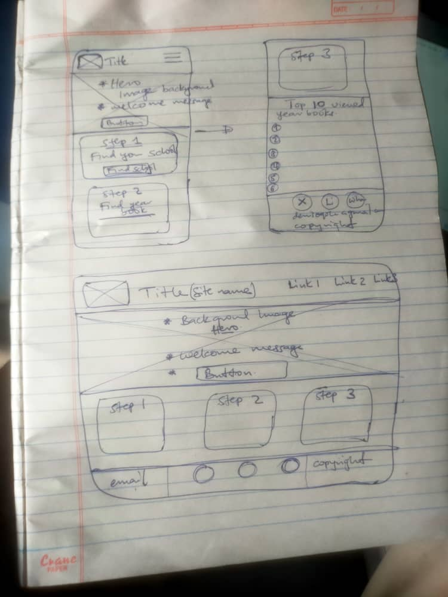

Site Name
Campus Memory Book
This name represents a digital yearbook that preserves school memories, student profiles, and event highlights in a modern and interactive format.
Site Purpose
The purpose of this website is to provide a digital yearbook platform where students can view, share, and preserve memories from school life. It will include student profiles, class photos, school events, and messages from classmates and teachers in an interactive and engaging format.
Scenarios
- How can I find and view my classmates’ profiles and photos?
- Where can I browse school events like sports day or graduation?
- How do I search for a specific student or class?
- Can I upload or contribute memories to the yearbook?
Color Scheme
- Coral Red (#FF6B6B) – Headings and highlights
- Blue (#4D96FF) – Navigation and links
- Green (#6BCB77) – Buttons and interactive elements
- Yellow (#FFD93D) – Accents and icons
- Light Background (#F7F7FF) – Page background
Typography
- Poppins – Headings
- Roboto – Body text
- Pacifico (optional) – Decorative titles or logo text
Wireframes

Testing
This site plan will be tested using W3C HTML validation, WAVE accessibility checks, and Lighthouse performance tools to ensure good structure, usability, and accessibility.